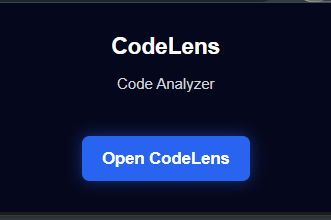
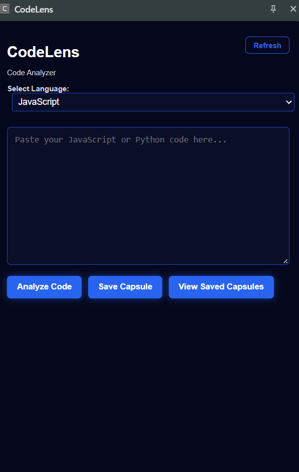
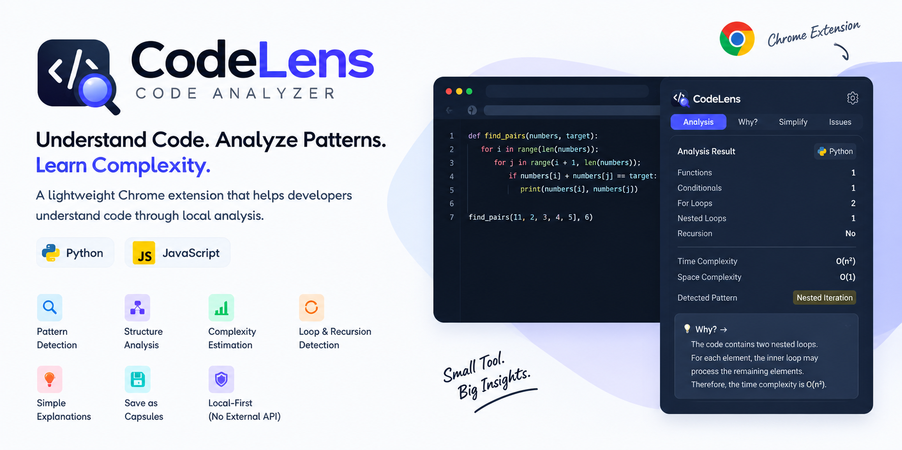

📸 Screenshots
See CodeLens in action.
🖥️ Front Interface

🧪 Example Problem

🔍 Code Analysis Interface

💾 Saved Capsules


A lightweight Chrome extension for analyzing JavaScript and Python code through local analysis, with complexity estimation, pattern detection, explanations, and saved analysis capsules.
Everything CodeLens provides in one lightweight extension.
Analyze JavaScript and Python source code locally.
Estimate time and space complexity from detected code structures.
Identify loops, nested loops, and recursion patterns.
Recognize common code patterns and structures.
Understand why a particular complexity or pattern was detected.
Save analysis results locally and search them later.
Review saved analysis results in a focused exam-friendly view.
Designed for local analysis without an external analysis API.
A simple workflow from code to useful insights.
Select JavaScript or Python in the CodeLens interface.
Paste the code you want to understand and analyze.
CodeLens detects structures, patterns, loops, recursion, and complexity.
Save results as Capsules and revisit them whenever needed.
See CodeLens in action.


Built with lightweight browser technologies.
CodeLens is designed around local analysis. Your code analysis workflow does not require an external code-analysis API.